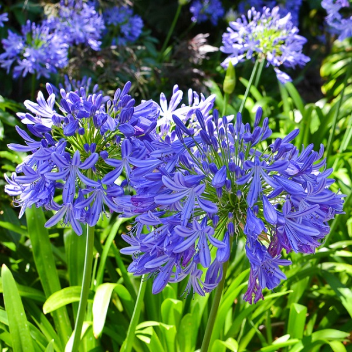
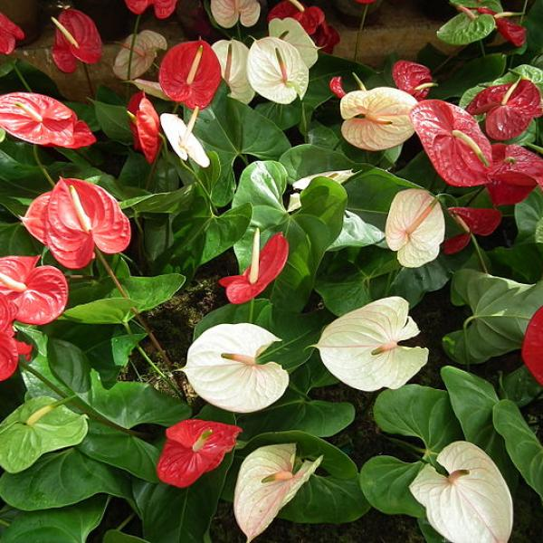
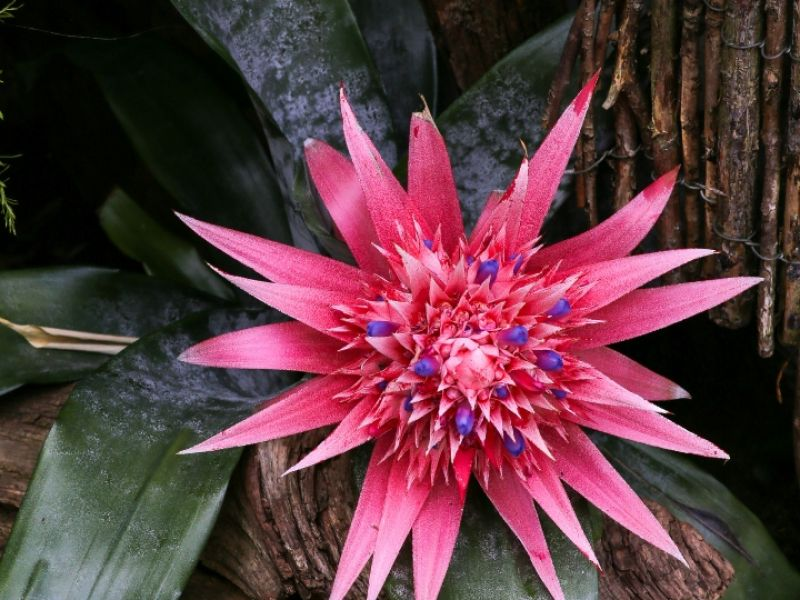
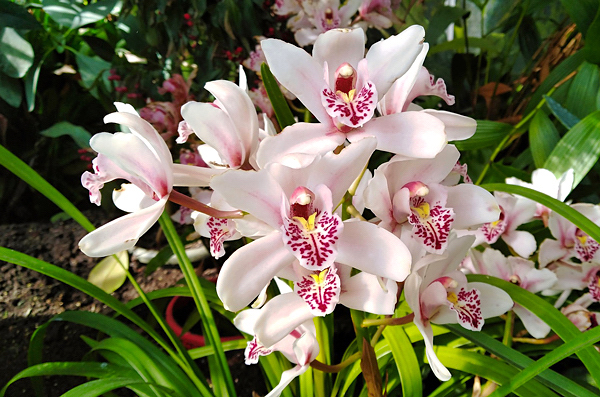
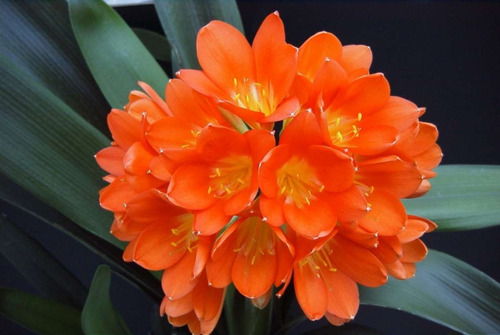
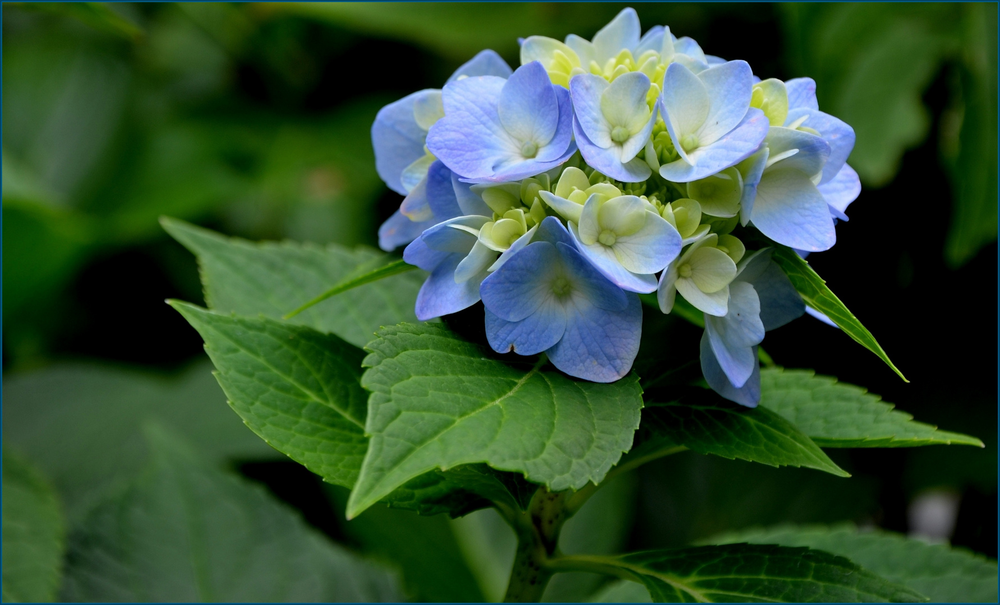
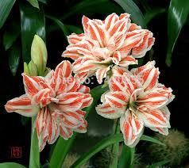
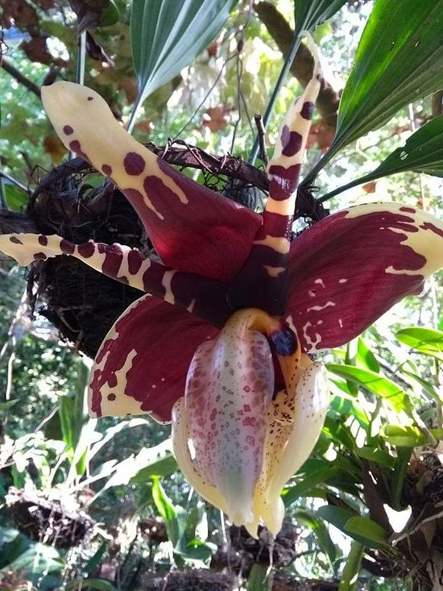

PLANTAS

Las plantas son seres vivos, como las personas y el resto de animales, y nos proporcionan alimento con sus diferentes partes comestibles: hojas, frutos, etc., dependiendo del tipo de planta que sea. Las plantas solo necesitan agua y la luz del sol para crecer, y no todas tiene flores. Ejemplos de aquellas que no producen flores son los helechos, colas de caballo, etc.
- Agapanto cientouno
- Anturio
- Bromelia
- Cymbidium
- Clibia
- Flor de gardenia
- Flor de mayo
- Hortencia
- Lirio
- Torito (orquidea)
Agapanto
Nombre común: Agapanto, Flor del amor, Lirio africano, Corona del rey Nombre científico: Agapanthus africanus Familia: Amaryllidaceae Origen: África
Ver detalles " 
Anturio
Nombre científico: Anthurium Nombre común: Anturio Clase: Liliopsida Familia: Araceae Género: Anthurium Origen: Género de plantas nativo de América. Es un género tropical americano de plantas de la familia Bromeliceae. Son plantas de hábitos terrestres, herbáceas, litófitas, que crecen sobre piedras o bien son epífitas que se desarrollan sobre árboles, cactus, etc. acaulescentes a cortamente caulescentes, rizomatosas o estoloníferas; plantas hermafroditas. Hojas arrosetadas y usualmente sin tallo, gruesamente armadas.
Ver detalles " 
cymbidium
Las planta degenerosa son simpodiales y se desarrollan hasta una altura de 60 cm y el racimo alcanza los 90 cm. El racimo se desarrolla desde la base del pseudobulbo más reciente. Cada flor puede tener un diámetro de 5 a 13 cm, según la especie. Florecen durante el invierno, y cada pedúnculo puede tener quince o más flores. Este género cuenta con una gran cantidad de colores diferentes, que incluyen blanco, verde, verde amarillento, crema, amarillo, marrón, naranja, rosa y rojo, con la excepción del azul y el negro. La floración dura alrededor de 10 semanas. Tienen las flores una textura cérea. Los redondeados sépalos y pétalos tienen más o menos las mismas dimensiones y muestran diversos colores según las especies. Las Cymbidium tienden a desarrollar más hojas que la mayoría de las orquídeas.
Ver detalles " 
clivia
Clivia es un género de monocotiledóneas oriundas de África meridional. Son perennes no leñosas, con hojas de color verde oscuro, largas y estrechas que producen racimos de flores acampanadas rojas o anaranjadas al final de un largo tallo, asemejándose a los lirios. De las 6 especies conocidas, Clivia miniata y sus variedades híbridas son las más ampliamente cultivadas, con flores que oscilan entre el rojo anaranjado oscuro al amarillo pálido.
Ver detalles " 
flor de gardenia
Las hojas, de un color verde oscuro brillante, son opuestas, ovales y miden de 7 a 12 cm de largo y de 2,5 a 4 cm de ancho. Las flores blancas, muy fragantes, de 5 a 12 cm de diámetro, suelen nacer solitarias en los haces de hojas. Dependiendo del cultivar, las flores pueden ser individuales o dobles.

Flor de mayo
La flor de mayo (Cattleya mossiae) es una planta epífita vista por primera vez en Venezuela en 1836. Perteneciente a la familia Orchidaceae, la planta crece sobre un huésped, el cual puede ser un árbol o rocas cercanos a fuentes hídricas como lagos y riachuelos. Para su desarrollo, la especie prefiere climas templados, con humedades superiores al 60%, siendo su hábitat natural la selva caribeña.es una especie endemica

Hortencia
Se trata de un arbusto caducifolio que crecer hasta una altura de entre 1 y 3 m-. Las hojas son opuestas, ovales, dentadas y acuminadas, de entre 7 y 20 cm de longitud, con bordes rudamente dentados. Las inflorescencias se agrupan en corimbos terminales, grandes cabezas globulares, de color blanco, azul, rojo o rosa. El color de las flores depende de la cantidad de sulfato de aluminio que contenga el suelo
Ver detalles " 
Lirio
s un género de herbáceas bulbosas perteneciente a la familia de las Liliáceas, es originaria de las zonas templadas de Eurasia y América del Norte. Las azucenas o lirios florecen a partir de primavera, pero es hasta el verano cuando alcanzan su mayor esplendor. La corola presenta 6 lóbulos, más o menos uniformes. La forma de estas flores es similar a la de una trompeta, se caracterizan por tener un aroma fuerte y agradable que incrementa durante la noche.
Ver detalles " 
Torito (orquidea)
Nombre científico o latino: Stanhopea spp. Nombre común o vulgar: Stanhopea, Torito Familia: Orchidaceae (Orquidáceas). Origen: Se distribuye desde México hasta el Norte de Argentina. Etimología: El nombre Stanhopea (Stan.), nombrada en honor de Philip Henry, 4º Conde de Stanhope, quien fue presidente de la Sociedad Medico-Botánica de Londres desde 1829 a 1837. Stanhopea es un género de unas 55 especies de orquídeas epífitas y algunas terrestres. Esta orquídea epífita pequeña se encuentran en bordes de ríos y en la sombra profunda de bosques húmedos con sustratos rocosos. Los flores son carnosas y muy aromáticas, de aspecto bastante extraño, sólo duran 5 días.
Ver detalles " 